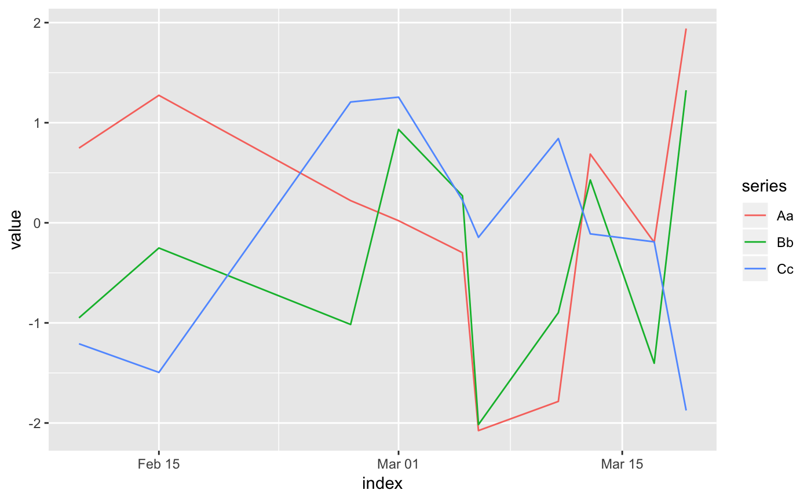
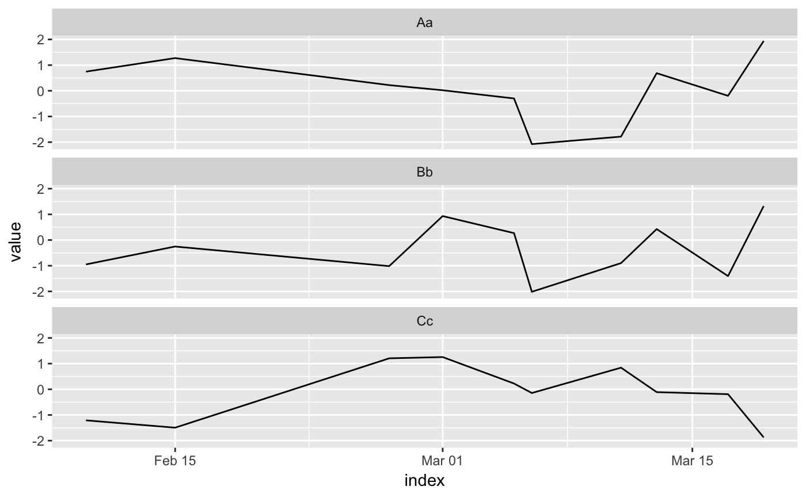
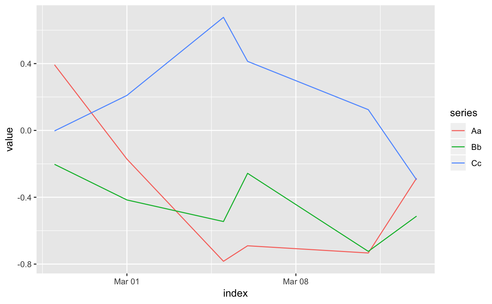

Tidy summarizes information about the components of a model. A model component might be a single term in a regression, a single hypothesis, a cluster, or a class. Exactly what tidy considers to be a model component varies cross models but is usually self-evident. If a model has several distinct types of components, you will need to specify which components to return.
# S3 method for zoo tidy(x, ...)
| x | A |
|---|---|
| ... | Additional arguments. Not used. Needed to match generic
signature only. Cautionary note: Misspelled arguments will be
absorbed in |
A tibble::tibble with one row for each observation in the zoo
time series and columns:
Index (usually date) for the zoo object
Name of the series
Value of the observation
library(zoo) library(ggplot2) set.seed(1071) # data generated as shown in the zoo vignette Z.index <- as.Date(sample(12450:12500, 10)) Z.data <- matrix(rnorm(30), ncol = 3) colnames(Z.data) <- c("Aa", "Bb", "Cc") Z <- zoo(Z.data, Z.index) tidy(Z)#> # A tibble: 30 x 3 #> index series value #> <date> <chr> <dbl> #> 1 2004-02-10 Aa 0.747 #> 2 2004-02-15 Aa 1.27 #> 3 2004-02-27 Aa 0.222 #> 4 2004-03-01 Aa 0.0211 #> 5 2004-03-05 Aa -0.298 #> 6 2004-03-06 Aa -2.08 #> 7 2004-03-11 Aa -1.78 #> 8 2004-03-13 Aa 0.686 #> 9 2004-03-17 Aa -0.195 #> 10 2004-03-19 Aa 1.94 #> # ... with 20 more rows